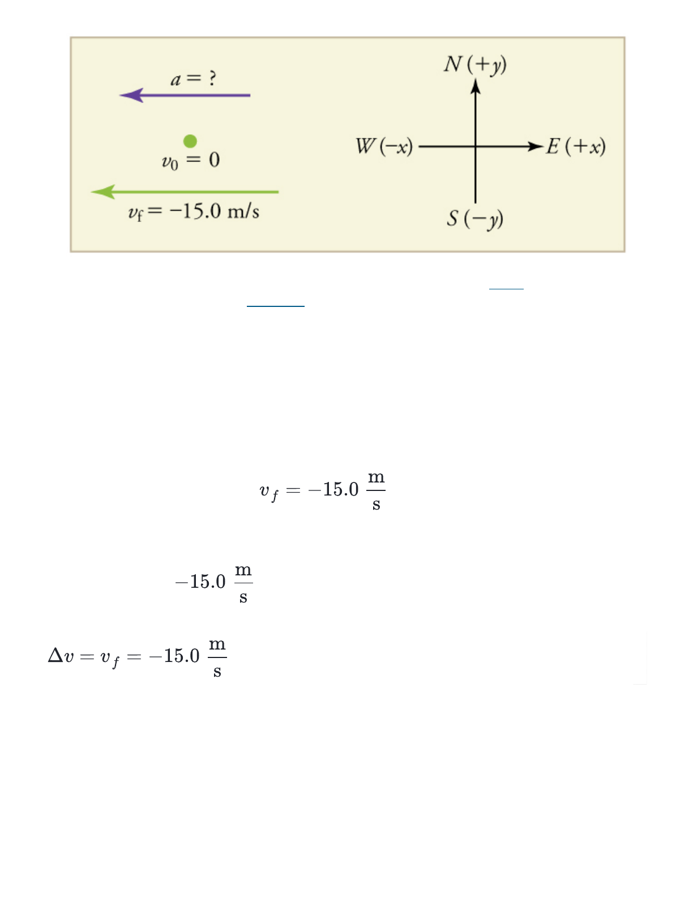
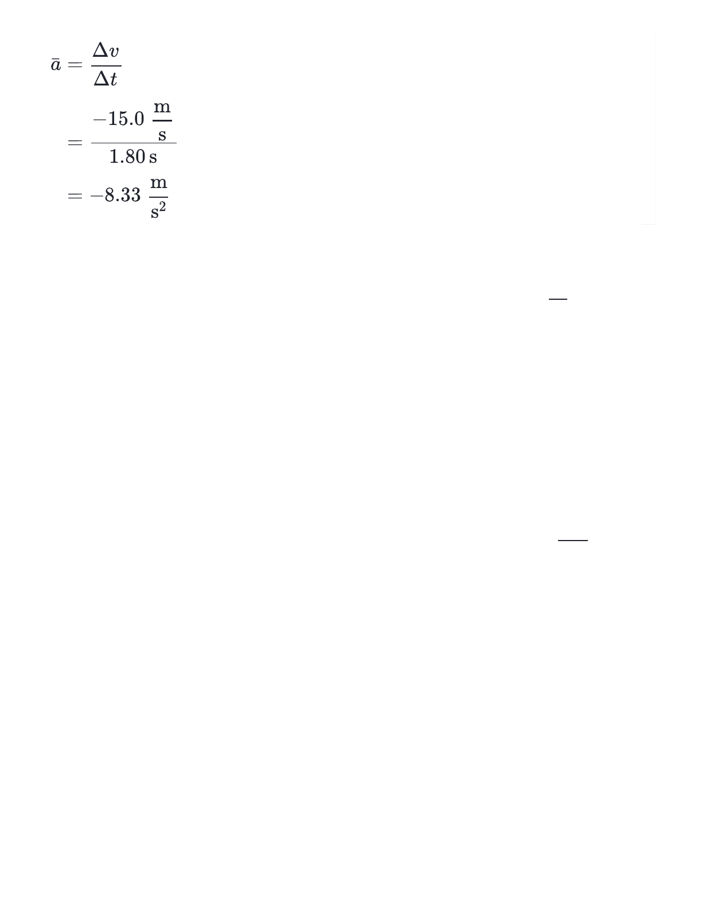
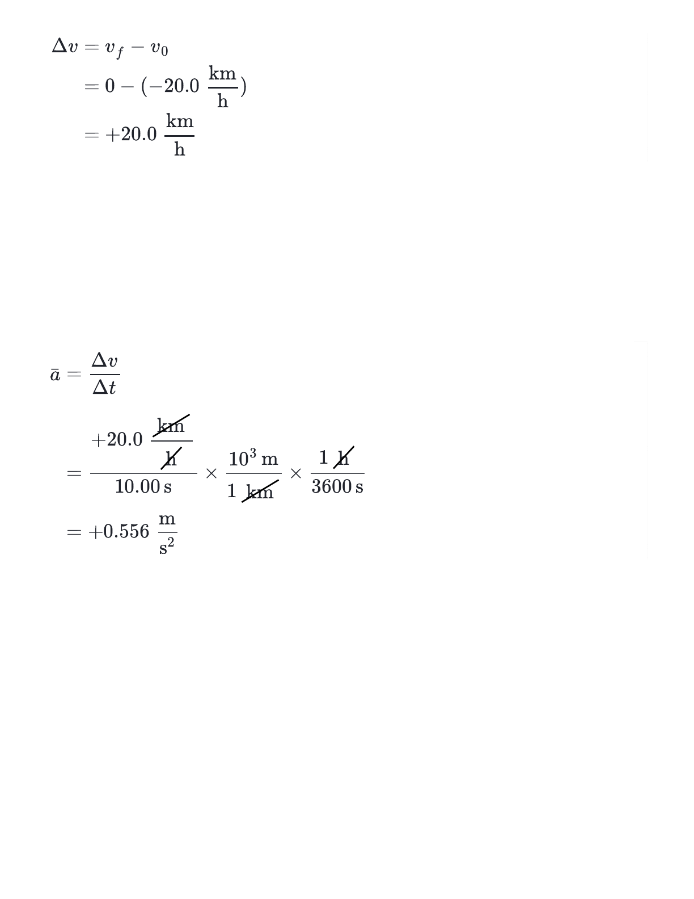
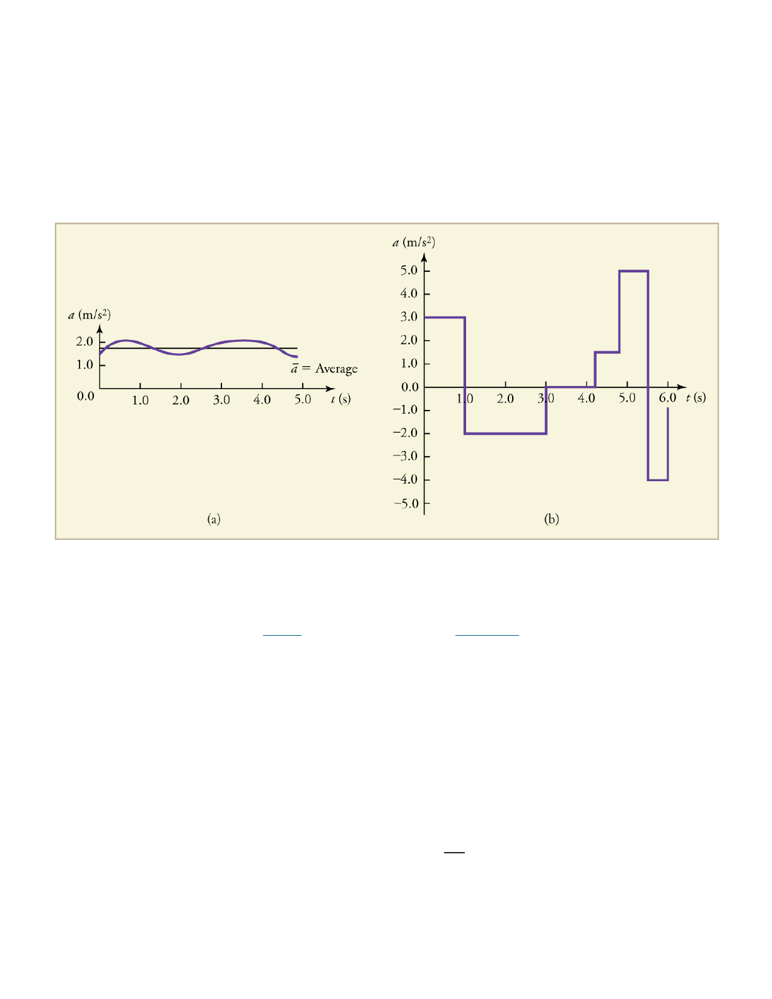

4/25/2016 (3) What is acceleration? | Acceleration | One-dimensional motion | Physics | Khan Academy
https://www.khanacademy.org/science/physics/one-dimensional-motion/acceleration-tutorial/a/acceleration-article 1/11
Velocity describes how position changes. Acceleration describes how velocity changes.
Two layers of change!
Share Tweet Email
Introduction
In everyday conversation, to accelerate means to speed up. The
accelerator in a car can in fact cause it to speed up. The greater the
acceleration, the greater the change in velocity over a given time. The
formal definition of acceleration is consistent with these notions, but more
comprehensive.
Definition of acceleration
Average acceleration is the rate at which velocity changes:
where is average acceleration, v is velocity, and t is time. The Δ symbol
Δ
What is acceleration?
= =
a¯
Δt
Δv
t − t
f 0
v − v
f 0
a¯
PHYSICS | ONE-DIMENSIONAL MOTION | ACCELERATION
1. Acceleration
Calculating the acceleration of
a Porsche
Video
2. What is acceleration?
Velocity describes how
position changes; accelerati…
Article
Video
• KHANacademy
Subject: Physics Home
3
gregtyka
Search for subjects, skills, and videos
4/25/2016 (3) What is acceleration? | Acceleration | One-dimensional motion | Physics | Khan Academy
https://www.khanacademy.org/science/physics/one-dimensional-motion/acceleration-tutorial/a/acceleration-article 2/11
represents the change in a variable. The change in velocity, Δv, is
calculated from the difference between final velocity v and initial velocity
v .
Because acceleration is velocity in divided by time in s, the SI units for
acceleration are , meters per second squared or meters per second per
second, which literally means by how many meters per second the velocity
changes every second.
Recall that velocity is a vector that has both magnitude and direction. This
means that a change in velocity can be a change in magnitude (or speed),
but it can also be a change in direction. For example, if a car turns a corner
at constant speed, it is accelerating because its direction is changing. The
quicker you turn, the greater the acceleration. So there is an acceleration
when velocity changes either in magnitude (an increase or decrease in
speed) or in direction, or both.
Keep in mind that although acceleration is in the direction of the change in
velocity, it is not always in the direction of motion. When an object's
acceleration is in the same direction of its motion, the object will speed up.
However, when an object's acceleration is opposite to the direction of its
motion, the object will slow down.
Note that speeding up and slowing down should not be confused with a
positive and negative acceleration! The next two examples should help to
make this distinction more clear.
Example 1: Average acceleration of a racehorse
f
0
s
m
s
2
m
4/25/2016 (3) What is acceleration? | Acceleration | One-dimensional motion | Physics | Khan Academy
https://www.khanacademy.org/science/physics/one-dimensional-motion/acceleration-tutorial/a/acceleration-article 3/11
Image of racehorses from OpenStax Physics, CC
BY 4.0
Example 1: Average acceleration of a racehorse
A racehorse coming out of the gate
accelerates from rest to a velocity of
15.0 due west in 1.80 s. What is
its average acceleration?
We can calculate the average
acceleration of the racehorse by
using the equation for average
acceleration from the previous
section.
Step 1. Draw a diagram and assign coordinate system
First we draw a diagram and assign a coordinate system to the problem.
Notice that we assign east as positive (to the right) and west as negative (to
the left). We have a purple acceleration vector arrow pointing west (to the
left) in the negative x direction, and a green velocity vector arrow also
pointing toward the left. The initial velocity is a point labeled as 0 and
final velocity is an arrow labeled as −15.0 .
s
m
s
m
s
m
{kind=link}

4/25/2016 (3) What is acceleration? | Acceleration | One-dimensional motion | Physics | Khan Academy
https://www.khanacademy.org/science/physics/one-dimensional-motion/acceleration-tutorial/a/acceleration-article 4/11
Diagram of accelerating racehorse and the coordinate system. Image from
OpenStax Physics, CC BY 4.0
We can see from our diagram that both final velocity and acceleration are
negative.
Step 2. Find Δv and Δt
We know that v = 0 and , where the minus sign for v
indicates direction toward the west. Also, we know that Δt = 1.80 s. We
can use this information to find the change in velocity. Since the horse is
going from 0 to , its change in velocity equals its final velocity:
Step 3. Solve for
We can plug in the known values of Δv and Δt and solve for the unknown
using our equation for average acceleration:
0 f
a¯
a¯
{kind=link}

4/25/2016 (3) What is acceleration? | Acceleration | One-dimensional motion | Physics | Khan Academy
https://www.khanacademy.org/science/physics/one-dimensional-motion/acceleration-tutorial/a/acceleration-article 5/11
The minus sign for acceleration indicates that acceleration is toward the
west. This means that the horse increases its velocity by 8.33 due west
each second, that is, 8.33 meters per second per second. Keep in mind
that this is truly an average acceleration, because the increase in velocity
does not necessarily happen smoothly for the rider!
Example 2: Deceleration of a subway train
Suppose a subway train slows to a stop from a velocity of 20.0 in
1.00 s. The coordinates for x and the velocity vectors are shown in the
diagram below. What is the average acceleration of the train while
stopping?
s
m
h
km

4/25/2016 (3) What is acceleration? | Acceleration | One-dimensional motion | Physics | Khan Academy
https://www.khanacademy.org/science/physics/one-dimensional-motion/acceleration-tutorial/a/acceleration-article 6/11
Diagram of the decelerating train and the coordinate system. Image from
OpenStax Physics, CC BY 4.0
We can calculate average acceleration by finding the change in velocity
and the change in time for the subway train. This is similar to our strategy
for Example 1.
Step 1. Find Δv and Δt
First we can identify the known quantities, taking care to keep the signs
consistent:
We can use this information to solve for the change in velocity, Δv.
v = −20.0
0
h
km
v = 0
f
h
km
Δt = 10.0 s
{kind=link}

4/25/2016 (3) What is acceleration? | Acceleration | One-dimensional motion | Physics | Khan Academy
https://www.khanacademy.org/science/physics/one-dimensional-motion/acceleration-tutorial/a/acceleration-article 7/11
Step 3. Convert to SI units and solve for
Since the units are mixed (we have both hours and seconds for time), we
need to convert everything into SI units of meters and seconds when we
solve for .
The plus sign means that acceleration is to the right. This is reasonable
because the train initially has a negative velocity (to the left) in this problem
and a positive acceleration opposes the motion (and so it is to the right).
Again, acceleration is in the same direction as the change in velocity, which
is positive here. This acceleration can be called a deceleration since it is in
the direction opposite to the velocity.
Instantaneous acceleration
a¯
a¯

4/25/2016 (3) What is acceleration? | Acceleration | One-dimensional motion | Physics | Khan Academy
https://www.khanacademy.org/science/physics/one-dimensional-motion/acceleration-tutorial/a/acceleration-article 8/11
Instantaneous acceleration a, or the acceleration at a specific instant in
time, is obtained by considering an infinitesimally small interval of time.
How do we find instantaneous acceleration using only algebra? The answer
is that we choose an average acceleration that is representative of the
motion. Let's look at two examples.
Graphs of instantaneous acceleration versus time for two different
motions. In graph a, acceleration varies only slightly and is always in the
same direction. In graph b, the acceleration varies widely depending on
the time interval. Image from OpenStax Physics, CC BY 4.0
The graphs above show instantaneous acceleration versus time for two
very different motions. In graph a, the instantaneous acceleration varies
only slightly over time. Thus, the average acceleration over the entire
interval is nearly the same as the instantaneous acceleration at any time. In
this case, we could treat this motion as if it had a constant acceleration
equal to the average (in this case about 1.8 ).
In graph b, the acceleration varies drastically over time. In such situations it
s
2
m
{kind=link}
4/25/2016 (3) What is acceleration? | Acceleration | One-dimensional motion | Physics | Khan Academy
https://www.khanacademy.org/science/physics/one-dimensional-motion/acceleration-tutorial/a/acceleration-article 9/11
is best to consider smaller time intervals and choose an average
acceleration for each. For example, we could consider motion over the time
intervals from 0 to 1.0 s and from 1.0 to 3.0 s as separate motions with
accelerations of +3.0 and −2.0 , respectively.
Sign and direction of acceleration
Perhaps the most important thing to note about these examples is the signs
of the answers. Most people interpret negative acceleration as the slowing
of an object. However, this is not always the case! As we see in Example 2,
when the acceleration is in the opposite direction from the velocity, a
positive acceleration will also result in the slowing of an object.
The relative signs for velocity and acceleration tell us whether the object is
slowing down or speeding up.
If acceleration has the same sign as the velocity, the object is speeding
up.
If acceleration has the opposite sign from the velocity, the object is
slowing down.
Summary
Acceleration is the rate at which velocity changes. In symbols, average
acceleration is
s
2
m
s
2
m
a¯
4/25/2016 (3) What is acceleration? | Acceleration | One-dimensional motion | Physics | Khan Academy
https://www.khanacademy.org/science/physics/one-dimensional-motion/acceleration-tutorial/a/acceleration-article 10/11
The SI units for acceleration are .
Acceleration is a vector, and thus has both a magnitude and direction.
Acceleration can be caused by either a change in the magnitude or the
direction of the velocity.
Instantaneous acceleration a is the acceleration at a specific instant in
time.
Deceleration is an acceleration with a direction opposite to that of the
velocity.
[Attributions and references]
= =
a¯
Δt
Δv
t − t
f 0
v − v
f 0
s
2
m
Ask a question...
Answer this question...
Tips & Thanks Top Recent Unanswered
2 votes • • by
In the description of example 2, is it supposed to be 10 s instead of 1.00 seconds?
Questions
Comment Flag 5 days ago Sam Dahl
4/25/2016 (3) What is acceleration? | Acceleration | One-dimensional motion | Physics | Khan Academy
https://www.khanacademy.org/science/physics/one-dimensional-motion/acceleration-tutorial/a/acceleration-article 11/11
Up Next
Airbus A380 take-off time
ABOUT
Our Mission
You Can Learn
Anything
Our Team
Our Interns
Our Content
Specialists
Our Board
SUPPORT
Help center
CONTACT US
Contact
Press
COACHING
Coach Reports
Coach Resources
Case Studies
Common Core
CAREERS
Full Time
Internships
CONTRIBUTE
Donate
Volunteer
Our Supporters
INTERNATIONAL
Change language
Translate our content
SOCIAL
Facebook
Twitter
Blog
Life at KA
Terms of Use Privacy Notice © 2016 Khan Academy
Except where noted, all rights reserved.
Free classes and courses available for online learning at every level: Elementary, High school, and College lessons.